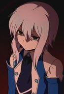

| |
Allister |
|
Allister is the Gym Leader of Stow-on-Side's Gym. He specializes in Ghost-type Pokemon. He is shy and prefers to keep things to himself. Depsite his shy personally, he also has a mischevous side and enjoys scaring people for fun. |
| |
Antonio |
|
Antonio is Conrad's grandson. He participates as Red Whirlwind's sidekick and works in William's theater. His arsenal revolves around trickery. He has a crush on Regan. |
 |
Chane Laforet |
- Baccano!
- Baccano! Specials
|
Chane Laforet is a young mortal woman who is the daughter of Huey Laforet. She broaded The Flying Pussyfoot with a group known as the "Black Suit." She has beautiful and somewhat delicate appearance, but a fierce fighter with dagger to protect herself. She is devoted to her father, cares for Huey and wants to protect him knowing that he is an immortal. She has the ability to kill without showing any emotion. Chane is fiercely loyal and protective of the people who she cares for and willing to sacrifice her for their sake. |
| |
Dolores |
- The Seven Deadly Sins: Revival of The Commandments
|
Dolores was a member of Giants Clan and friend of Diane. She was shy, timid, disliked battling and wanted to live a peaceful life. |
|  |
Echo |
- Pandora Hearts
- Pandora Hearts Special
|
Echo is a servant to Vincent Nightray. Echo's personality persona seemed emotionless. She speaks in a monotone vocal range. She uses short swords as her weapon. |